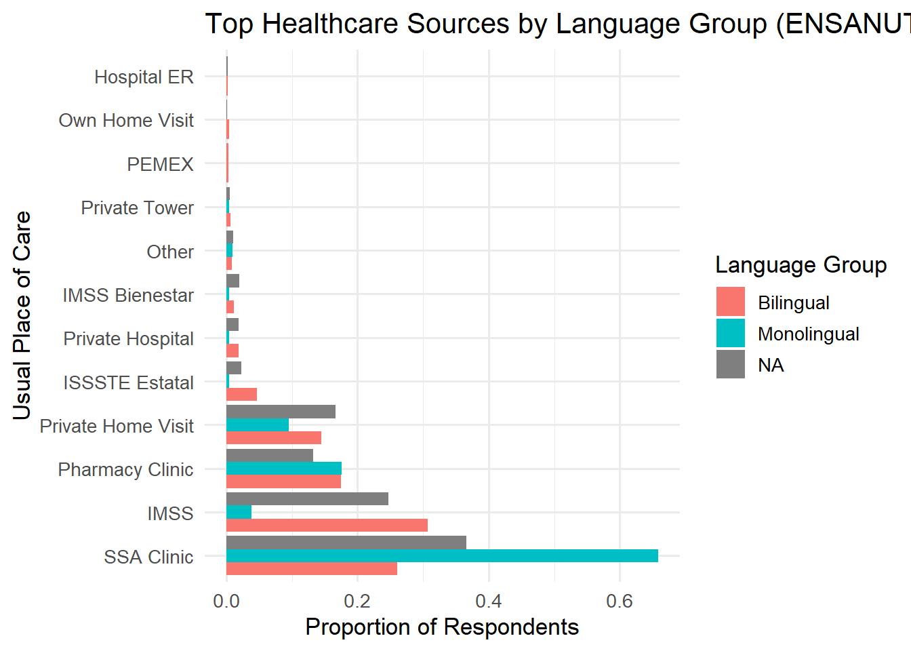

| Table 1. Summary Statistics of Key Variables | ||||
|---|---|---|---|---|
| Variable | Mean | SD | Min | Max |
| monolingual | 0.01 | 0.08 | 0.00 | 1.00 |
| tier2care | 0.45 | 0.50 | 0.00 | 1.00 |
| escolaridad | 3.69 | 2.79 | 0.00 | 12.00 |
| ingreso | 2.29 | 1.79 | 1.00 | 9.00 |
| derechohabiencia | 0.47 | 0.50 | 0.00 | 1.00 |
| area | 0.24 | 0.43 | 0.00 | 1.00 |
FINALPROJECT
Introduction
In Mexico, healthcare disparities between Indigenous and non-Indigenous populations are a long-standing public health concern. These disparities are often attributed to systemic barriers such as geographic isolation, poverty, and discrimination in public institutions. However, one of the most persistent and underexamined drivers of healthcare inequality is language—specifically, the gap between healthcare institutions that operate almost exclusively in Spanish and the millions of individuals who primarily speak one of Mexico’s 68 recognized Indigenous languages. While many studies focus on the ethnic dimension of exclusion, fewer have analyzed how variation in Spanish proficiency within Indigenous-language speakers affects access to care.
Existing research has shown that Indigenous-language speakers face significant linguistic and cultural barriers in the Mexican healthcare system. For instance, Villarreal and Silva find that areas with higher concentrations of Indigenous-language speakers have systematically lower hospital use, even after controlling for income and rurality (Villarreal & Silva, 2020). Similarly, Haimovich and Márquez Mora, studying Nahuatl-speaking communities in Puebla, found that many patients avoid hospitals not due to cost or distance, but due to an inability to communicate with medical staff and a resulting lack of trust in the system (Haimovich & Márquez Mora, 2021). Aguilar-Gaxiola et al. emphasize how language exclusion intersects with social marginalization to undermine both the quantity and quality of care received by Indigenous populations (Aguilar-Gaxiola et al., 2018).
These studies provide important evidence about the barriers faced by Indigenous communities, but they typically treat the Indigenous population as internally homogeneous. In reality, there is significant variation in Spanish fluency among Indigenous-language speakers. Some are bilingual, capable of navigating Spanish-speaking institutions, while others are monolingual, relying exclusively on Indigenous languages in daily life. This linguistic distinction matters. It may explain significant within-group differences in healthcare-seeking behavior that broader Indigenous vs. non-Indigenous comparisons overlook.
This project focuses specifically on this understudied divide: the difference in healthcare access between monolingual and bilingual Indigenous-language speakers. It uses data from the 2022 wave of the nationally representative Encuesta Nacional de Salud y Nutrición (ENSANUT) to examine whether individuals who speak only an Indigenous language are more likely to access lower-tier or basic public healthcare services, such as SSA clinics and IMSS Bienestar, compared to their bilingual peers.
Originally, the project aimed to define “informal care” narrowly—limited to traditional medicine or healers (curanderos, homeopaths, midwives). However, the data revealed that use of these providers is rare in the sample. Instead, the more revealing pattern lies in the type and tier of formal care accessed. While bilingual speakers access a diverse range of services—including pharmacy-affiliated clinics, private hospitals, and employer-based care—monolingual speakers are far more concentrated in basic public facilities that tend to be less administratively complex and more accessible to non-Spanish speakers.
This observation leads to a broader conceptualization of “informal” or limited-access care: not necessarily outside the formal health system, but rather at its most basic and linguistically permissive levels. These settings may be more geographically proximate and culturally familiar, but they are also often under-resourced, overburdened, and limited in scope. If monolingual speakers are disproportionately reliant on such facilities, it raises concerns about the equity and effectiveness of healthcare provision in Indigenous communities.
By narrowing the analysis to Indigenous-language speakers and distinguishing between monolingual and bilingual individuals, this project offers a more precise understanding of how language operates as a structural determinant of healthcare access. It also contributes to policy conversations around linguistic inclusion, suggesting that efforts to close healthcare gaps must go beyond physical access and financial protection to include language accessibility as a central component of equity.
In doing so, this study fills a key gap in the literature: moving beyond ethnic group comparisons to examine within-group inequalities based on language proficiency. It asks not just whether Indigenous people face barriers to care, but which Indigenous people, and why.
Theory and Hypothesis
Language is a fundamental determinant of access to public services, including healthcare. In Mexico, where the health system operates almost exclusively in Spanish, millions of Indigenous-language speakers face substantial barriers in navigating medical care. These barriers go beyond geographic or economic factors—they are linguistic and structural. For individuals who speak only an Indigenous language, the inability to communicate in Spanish can hinder their ability to understand symptoms, follow medical instructions, or even complete basic administrative procedures.
Theoretical frameworks in health access literature increasingly emphasize how language proficiency acts as a gatekeeping mechanism. Aguilar-Gaxiola et al. note that language exclusion in Mexican health services compounds socioeconomic disadvantage and contributes to underuse of institutional care (Aguilar-Gaxiola et al., 2018). Villarreal and Silva find that healthcare utilization rates are significantly lower in municipalities with high concentrations of Indigenous-language speakers, even after controlling for insurance coverage and rurality (Villarreal & Silva, 2020). Haimovich and Márquez Mora show that linguistic mismatch between patients and providers reduces the likelihood of Indigenous-language speakers trusting and engaging with formal health services (Haimovich & Márquez Mora, 2021).
However, while these studies point to language as a barrier, they often treat Indigenous-language speakers as a single, homogenous group. This project builds on existing research by distinguishing between monolingual Indigenous-language speakers—those who do not speak Spanish—and bilingual speakers who do. This within-group comparison allows for a more precise examination of how language proficiency shapes healthcare behavior, particularly in settings where all respondents share Indigenous identity and cultural background.
In such a context, Spanish proficiency becomes a powerful stratifier. Bilingual speakers are more likely to navigate complex administrative systems, request services from multiple providers, and access higher-tier care. In contrast, monolingual speakers may rely on lower-tier services that are more accessible, familiar, or less administratively burdensome. These may include basic public clinics such as SSA centers and IMSS Bienestar units. Although these are part of the formal healthcare system, their administrative simplicity and geographic proximity make them more accessible to individuals with limited Spanish.
This theoretical perspective views language not only as a communication tool but as a mechanism of institutional accessibility. In the absence of Spanish proficiency, monolingual Indigenous speakers are structurally disadvantaged in their ability to access diverse, high-quality care. Their limited provider options may not reflect personal choice, but rather constrained access rooted in linguistic exclusion.
Hypothesis: Among Indigenous-language speakers in Mexico, individuals who do not speak Spanish (monolinguals) are more likely to rely on lower-tier or basic public healthcare services than bilingual speakers, due to the linguistic inaccessibility of more complex care institutions.
This hypothesis is both falsifiable and policy-relevant. If monolingual speakers are found to use a narrower and less institutionally diverse range of providers, it would suggest that improving language accessibility should be a central focus in addressing Indigenous health disparities. Policies such as expanded translation services, Indigenous-language outreach, and training of bilingual medical staff would be critical steps toward equitable care.
Research Design
This analysis draws on data from the 2022 wave of the Encuesta Nacional de Salud y Nutrición Continua (ENSANUT), administered by Mexico’s Instituto Nacional de Salud Pública (INSP). ENSANUT is a nationally representative cross-sectional survey that uses a probabilistic, stratified sampling design to produce reliable health and demographic estimates at the national, regional, and urban/rural levels. The dataset includes rich information on healthcare usage, language use, education, household income, and access to insurance, making it suitable for examining how structural factors influence healthcare-seeking behavior.
The unit of analysis is the individual respondent. For this study, the sample is restricted to adults aged 18 and older who report speaking an Indigenous language, using item H0311 (¿Habla alguna lengua indígena?). While ENSANUT does not directly ask about ethnic identity, both INSP and Mexico’s national statistics agency (INEGI) routinely use Indigenous language use as a proxy for Indigenous identity in population-level studies (inegi2019?). This approach is standard in health equity research and allows for robust analysis of intra-group differences within Indigenous populations.
Within this sample, respondents are divided into two groups using item H0312 (¿Habla también español?): - Monolinguals: Speak an Indigenous language but not Spanish (H0311 = yes, H0312 = no). - Bilinguals: Speak both an Indigenous language and Spanish (H0311 = yes, H0312 = yes).
A binary variable monolingual is created to distinguish these groups, coded as 1 for monolinguals and 0 for bilinguals. This distinction allows us to test whether the absence of Spanish proficiency, independent of shared Indigenous identity, influences patterns of healthcare access.
The dependent variable is the type of healthcare institution the respondent usually visits when facing a health need. Item H0309 asks: “Cuando tiene una necesidad de salud, ¿en dónde se atiende usualmente?” The responses are grouped into a three-tier typology based on institutional complexity and accessibility: - Tier 1 (High-Complexity Institutional Care): IMSS, ISSSTE, PEMEX, Defense, private hospitals. - Tier 2 (Basic Public Care): SSA clinics, IMSS Bienestar, and DIF. - Tier 3 (Non-Institutional/Alternative Care): pharmacy consults, home-based care, traditional healers, homeopaths.
For the purposes of hypothesis testing, a binary variable tier2_care is constructed: 1 if the respondent uses Tier 2 care, 0 if they use any other tier. Tier 2 institutions are the most common formal care sites in underserved areas and represent the lowest-barrier access point in the public system. They do not require employment-based affiliation (as with IMSS) and are generally easier to navigate for individuals with limited literacy or language proficiency. Focusing on Tier 2 allows us to test whether monolingual speakers are funneled into this tier as a result of structural and linguistic barriers that restrict access to Tier 1 care, without resorting to informal or alternative care sources (Tier 3).
To reduce omitted variable bias, the model includes the following control variables: - Education level (H0317A): Ordinal variable capturing highest grade completed (no schooling to university). - Income bracket: Derived from ENSANUT’s household income sections (I and VI), capturing relative socioeconomic status. - Insurance status (H0310A): Whether the respondent has formal healthcare coverage through IMSS, ISSSTE, or other systems. - Urban/rural residence (estrato): Binary variable indicating household location type.
Summary Statistics
These controls account for structural drivers of healthcare access—such as affordability, geographic proximity, and institutional affiliation—that could confound the relationship between language ability and healthcare-seeking behavior.
The main model is a logistic regression estimating the probability of Tier 2 care usage:
Call: glm(formula = tier2care ~ monolingual + escolaridad + ingreso +
derechohabiencia + area, family = binomial, data = cleandata)
Coefficients:
(Intercept) monolingual escolaridad ingreso
1.38458 0.77715 -0.07220 -0.09449
derechohabiencia area
-2.80558 0.24014
Degrees of Freedom: 35084 Total (i.e. Null); 35079 Residual
(1398 observations deleted due to missingness)
Null Deviance: 48310
Residual Deviance: 33540 AIC: 33550Empirical Extension
To test the robustness of the relationship, we conduct an empirical extension by restricting the sample to respondents with mid-level income and completed primary school. This subgroup analysis helps address the possibility that language ability is merely proxying for deeper structural exclusion. If monolingual speakers are still more likely to use informal care within a relatively homogeneous SES subgroup, it would strengthen the argument that language accessibility alone—not poverty or education—is driving the observed effect.
This approach allows us to more confidently interpret the coefficient on only_indig_lang as a function of linguistic exclusion, rather than as an artifact of correlated disadvantage.
Call:
glm(formula = tier2care ~ monolingual + escolaridad + ingreso +
derechohabiencia + area, family = binomial, data = filter(cleandata,
desc_ent1 == "20 OAXACA"))
Coefficients:
Estimate Std. Error z value Pr(>|z|)
(Intercept) 0.66769 0.17911 3.728 0.000193 ***
monolingual 1.27790 0.39853 3.207 0.001344 **
escolaridad -0.05506 0.02998 -1.837 0.066236 .
ingreso -0.16859 0.06755 -2.496 0.012569 *
derechohabiencia -1.23807 0.18596 -6.658 2.78e-11 ***
area 0.24573 0.14598 1.683 0.092323 .
---
Signif. codes: 0 '***' 0.001 '**' 0.01 '*' 0.05 '.' 0.1 ' ' 1
(Dispersion parameter for binomial family taken to be 1)
Null deviance: 1348.0 on 975 degrees of freedom
Residual deviance: 1221.5 on 970 degrees of freedom
(40 observations deleted due to missingness)
AIC: 1233.5
Number of Fisher Scoring iterations: 4
Call:
glm(formula = tier2care ~ monolingual + escolaridad + ingreso +
derechohabiencia + area, family = binomial, data = filter(cleandata,
desc_ent1 == "09 CIUDAD DE MÉXICO"))
Coefficients:
Estimate Std. Error z value Pr(>|z|)
(Intercept) 1.44929 0.13741 10.547 < 2e-16 ***
monolingual -13.47597 324.74373 -0.041 0.96690
escolaridad -0.03715 0.02115 -1.756 0.07906 .
ingreso -0.08394 0.03102 -2.706 0.00681 **
derechohabiencia -2.98380 0.12677 -23.536 < 2e-16 ***
area 0.27531 0.30193 0.912 0.36186
---
Signif. codes: 0 '***' 0.001 '**' 0.01 '*' 0.05 '.' 0.1 ' ' 1
(Dispersion parameter for binomial family taken to be 1)
Null deviance: 2481.3 on 1814 degrees of freedom
Residual deviance: 1683.1 on 1809 degrees of freedom
(42 observations deleted due to missingness)
AIC: 1695.1
Number of Fisher Scoring iterations: 11Findings
| (1) | |
|---|---|
| (Intercept) | 1.385*** |
| (0.031) | |
| monolingual | 0.777*** |
| (0.210) | |
| escolaridad | -0.072*** |
| (0.005) | |
| ingreso | -0.094*** |
| (0.008) | |
| derechohabiencia | -2.806*** |
| (0.029) | |
| area | 0.240*** |
| (0.033) | |
| Num.Obs. | 35085 |

| National | Oaxaca | Jalisco, CDMX & Nuevo León | |
|---|---|---|---|
| + p < 0.1, * p < 0.05, ** p < 0.01, *** p < 0.001 | |||
| (Intercept) | 1.385*** | 0.668*** | 1.233*** |
| (0.031) | (0.179) | (0.080) | |
| monolingual | 0.777*** | 1.278** | -11.876 |
| (0.210) | (0.399) | (195.872) | |
| escolaridad | -0.072*** | -0.055+ | -0.082*** |
| (0.005) | (0.030) | (0.013) | |
| ingreso | -0.094*** | -0.169* | -0.099*** |
| (0.008) | (0.068) | (0.018) | |
| derechohabiencia | -2.806*** | -1.238*** | -2.835*** |
| (0.029) | (0.186) | (0.073) | |
| area | 0.240*** | 0.246+ | 0.506** |
| (0.033) | (0.146) | (0.180) | |
| Num.Obs. | 35085 | 976 | 5697 |
| AIC | 33549.6 | 1233.5 | 5021.6 |
| BIC | 33600.4 | 1262.8 | 5061.5 |
| Log.Lik. | -16768.782 | -610.747 | -2504.788 |
| RMSE | 0.39 | 0.47 | 0.37 |
References
Aguilar-Gaxiola, S., Loera, G., Méndez, L., Sala, M., & Nakamoto, J. (2018). Health disparities and inequities: A look at the mexican indigenous population. Ethnicity & Disease, 28(3), 365–372.
Haimovich, P., & Márquez Mora, P. (2021). Language, culture and healthcare: Nahuatl-speaking communities in sierra norte de puebla. Multilingua, 40(1), 27–47. https://doi.org/10.1515/multi-2020-0027
Villarreal, A., & Silva, B. (2020). Racial disparities in health care access in mexico: The role of language and geography. Social Science & Medicine, 258, 113063. https://doi.org/10.1016/j.socscimed.2020.113063